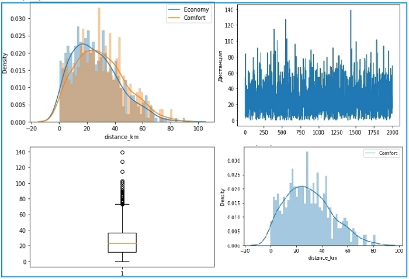

Статистический анализ и проверка гипотез.
Цель проекта - провести исследование данных, проверить гипотезу о поведенческом предпочтении пользователей определённого класса такси и сделать выводы, чтобы помочь компании стать лучшей на рынке. Данные для статистического анализа можно скачать по ссылке.
Следующие требования:
- Исследовать данные и построить графики плотности распределения дистанций поездок для классов Economy и Comfort.
- Проверить гипотезу: «На дальние поездки пользователи предпочитают Economy-классу более комфортные условия поездки в Comfort-классе.
- Сделать выводы по результатам проверки. Для определения предпочтений использовать описательные статистики и графики по классам.
Описательные статистики
В проекте вычислены описательные статистики, построено распределение задействованных в гипотезе данных, проведена проверка гипотезы соответствующим статистическим критерием, а также сделаны выводы по результатам проверки. Работа была выполнена с помощью инструмента Google Colaboratory (Python).
Подробную информацию по проекту и сами запросы можно посмотреть ниже.